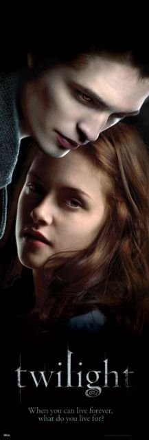

Gordon Matthew Sumner
(ur. 2 października 1951 w Wallsend) – brytyjski muzyk,
multiinstrumentalista, piosenkarz,
kompozytor a także
aktor. W latach 70. i 80. był liderem, głównym kompozytorem,
moj ulubiony film to zmierzch
moje ulubione skiazki to:
,